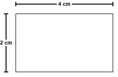
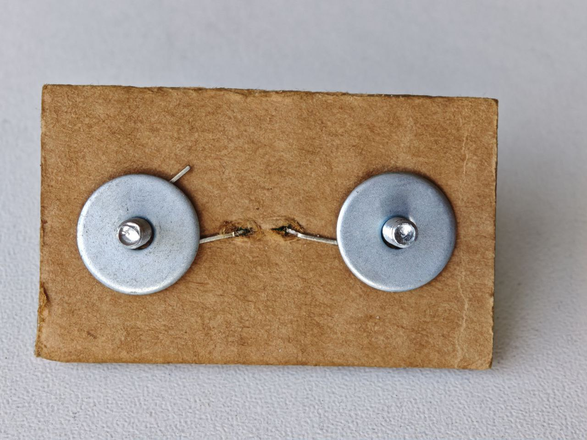
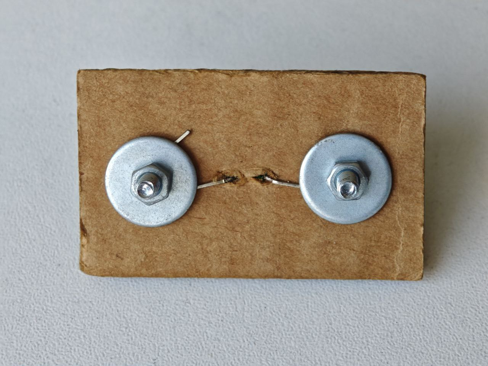

En los siguientes pasos se va a detallar la construcción del módulo LED. Una vez que hayas acabado de crearlo, lo probarás con el microbit y con un pequeño programa de prueba:
Paso 1
Crear una base de cartón de 2 o 3 milímetros de espesor con la ayuda de tijeras, lápiz y una regla. Las medidas se presentan a continuación:

Paso 2
Con la ayuda del desarmador con punta Philips has 4 agujeros. Dos de ellos para colocar los tornillos y los otros dos huequitos para que ingresen las dos patitas del LED. En la siguiente imagen se aprecia cómo debería de quedar

Paso 3
Una vez que están insertados los tornillos y el led, las patitas del led doblarlas y unirlas con los tornillos. En la siguiente imagen se aprecia lo mencionado anteriormente:

Paso 4
Insertar las arandelas para ayudar a sujetar las patas del led. Esto aprecia en la siguiente imagen:

Paso 5
Insertar las tuercas y con la ayuda del desarmador sujetar y fijarlas muy bien. Esto se aprecia en la siguiente imagen:
